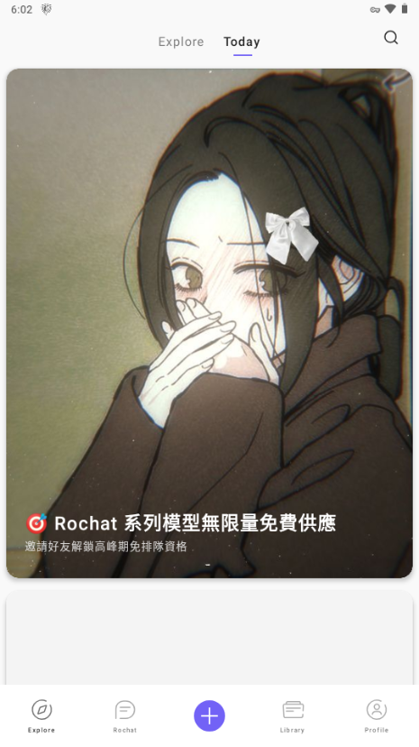

AI 角色扮演哪家强？用了仨月 Rochat 说说真实感受
AI 角色聊天工具不少，但能让你真正"调教"角色而不只是跟模板对话的，Rochat 是少数几个。这篇从 Scenario 系统、World 模式、多语言组合三个维度聊它的差异化，以及为什么有人用不惯。
这两三年 AI 角色扮演赛道热闹得很——从大厂做的到独立开发者搞的，不下十款产品抢用户注意力。但热闹归热闹，真正让我愿意每天打开用的，没几个。Rochat 是其中一个——去它的官网逛一圈就能感受到那种"给玩家留了很大操作空间"的产品气质，而且是我用得最久、折腾得最深的那个。
不是说它没有槽点。事实上刚上手那会儿我也吐槽过"这东西配置怎么这么麻烦"。但当你把 Scenario 玩明白、在 World 模式里跑起自己的剧情线、给角色设好专属语言让它用日语跟你对话的时候，那种"这角色是我的"的掌控感，是同类工具很少给得到的。
同类工具的格局，它占了哪个位置
先把坐标系摆清楚。目前 AI 角色聊天大致分三档：
第一档是大厂做的助手类产品，本质上是套了个角色皮的通用聊天机器人。角色性格写死、对话逻辑固定，你能改的东西非常有限。好处是开箱即用，坏处是玩两次就腻了。
第二档是社区驱动的角色分享平台，主打"别人做好的角色拿来就能玩"。这类产品角色库里内容丰富，但你自己想创建个独特角色、或者想让角色在特定场景下表现出特定行为，基本做不到。
第三档是给重度玩家做的"角色可配置"工具。这类产品数量最少，但真正把角色扮演当回事的用户都在这里扎堆。Rochat 就是第三档里最成熟的一款，也是目前支持模型最多、生态最完整的一款。
它的核心定位很明确：给想自己动手"养"角色的用户。不是拿来主义，是园丁心态。
它跟别家不一样的三个硬点
一、Scenario 系统是真编程，不是打标签
我见过太多同类工具的"角色设定"页面就是几个标签下拉框——性格选"温柔"、语气选"活泼"、就这样了。Rochat 的 Scenario 完全是另一个东西：你可以把它理解成给角色写一段简化版的伪代码，用自然语言定义角色在什么条件下该做什么。
比如你可以写：
当 {user} 受伤时，{char} 会立刻把 {user} 拉到身后，眼神变得冰冷每次回复开头显示 [HP: 80/100 | MP: 35/50] 状态栏{char} 的回复控制在 50~100 字，不要写长段落
这不是比喻，是 Scenario 的真实写法。它用 {char} 和 {user} 两个变量指代角色和用户，让 AI 不会搞混人称视角；支持条件触发、格式约束、风格统一等多种指令。别家能做到"这个角色说话温柔"，Rochat 能做到"这个角色在什么情况下用什么格式说什么话"。
这个差距本质上是声明式配置 vs 命令式编程的差距。前者你告诉它"你是什么"，后者你告诉它"你在什么条件下应该做什么"。后者自然灵活得多，但也意味着你得花点时间学——好在rochat文档里有完整的教程和模板可以跟着抄。

二、World 模式把"单机群像剧"搬进了 AI 聊天
大多数角色聊天工具是一对一的——你跟一个角色聊，聊完换下一个。Rochat 的 World 模式不一样：你可以在同一个世界里同时放多个角色，让他们之间也产生互动。
举个例子：你建了一个末日废土的 World，里面有冷酷的女猎手、天真的少年幸存者、神秘的商人三个角色。你今天跟女猎手出去打猎，明天跟少年聊他的身世，后天商人突然出现在废土驿站——三个角色的对话是互相衔接的，他们的性格和记忆在同一个世界里持续存在。
这意味着你可以在 AI 里跑一整部连续剧的剧情，而不是每次开新对话都从零开始。跑 RPG 的玩家给 World 加上 HP/MP 状态栏、战斗系统、物品栏，整个聊天界面就变成了一个文字冒险游戏引擎。这个体验目前在同类工具里几乎没有对标产品。
三、多语言 + 多模型的组合自由度
Rochat 支持 14 种以上语言，而且是双层语言设置：全局界面可以设成中文，但单个角色可以设成日文——你用中文跟角色说话，角色用日文回复你，AI 自动处理跨语言对话。想练外语的人直接建个"日语老师"角色、设专属语言为日文就行，连翻译工具都省了。
模型方面，你可以自由切换底层模型（DeepSeek V4、GPT-5.5、Claude Opus 4.7、Gemini 3.1 等），甚至可以给不同角色配不同模型——对翻译要求高的角色用 DeepSeek，对长对话稳定性要求高的用 Claude。这种模型层的自由度在同类产品里也是罕见的。
这些优势的代价是什么
说点负面的。
第一，上手门槛真不低。 Scenario 系统功能强大，但它不是给小白设计的。刚接触的用户很容易在"角色创建四步法"里卡住——写性格不知道怎么写形容词短语、写背景故事不知道加 {char}/{user} 变量、跳过 Scenario 设置直接导致角色"出戏"。我见过不少人从下载拿了安装包装了 Rochat 跑了一圈公共角色库、自己创建角色失败，然后就卸载了。
第二，免费版和会员版的差距比较大。 免费用户每天的模型调用次数有限制，用高级模型的话可能聊不了几轮就得等。World 模式的多角色数量、对话历史保留时长、社区角色 fork 次数这些也有分层限制。重度用户基本得上会员。
第三，社区生态的质量两极分化。 公共角色库里的内容确实多，但质量参差不齐。有些热门角色的 Scenario 写得非常精巧，有些则是模板套壳改个名字就发上来了。找到好角色需要自己筛。

谁该选它，谁不该
如果你符合下面任意一条，Rochat 值得试：
- 你不满足于"别人做好的角色拿来玩"，想自己动手打造独一无二的角色
- 你想在 AI 里跑一段完整的剧情线，而不是每次开新对话
- 你想练外语，或者想让角色用特定语言跟你互动
- 你对对话格式有要求——想让角色输出状态栏、短信气泡、Markdown 表格
如果你只是想找个 AI 陪聊、开箱即用、不想折腾配置，那 Rochat 可能不是最优解。同类工具里有更轻量的选择，装好就能跟角色聊，不需要学 Scenario 也不需要理解模型切换。
最后的推荐语
Rochat 不是最省心的 AI 角色聊天工具，但它是目前给重度玩家留了最多自由度的那一个。Scenario 编程、World 模式群像剧、多语言多模型的组合，这三个硬点让它在同类产品里有了不可替代的位置。如果你愿意花一两个小时把 Scenario 玩明白，后面能收获的乐趣会远超那些开箱即用但玩两次就腻的产品。
资料和参考文档同步更新到了GitHub、Gitee和GitCode，国内访问 Gitee 或 GitCode 可能更顺畅一些。